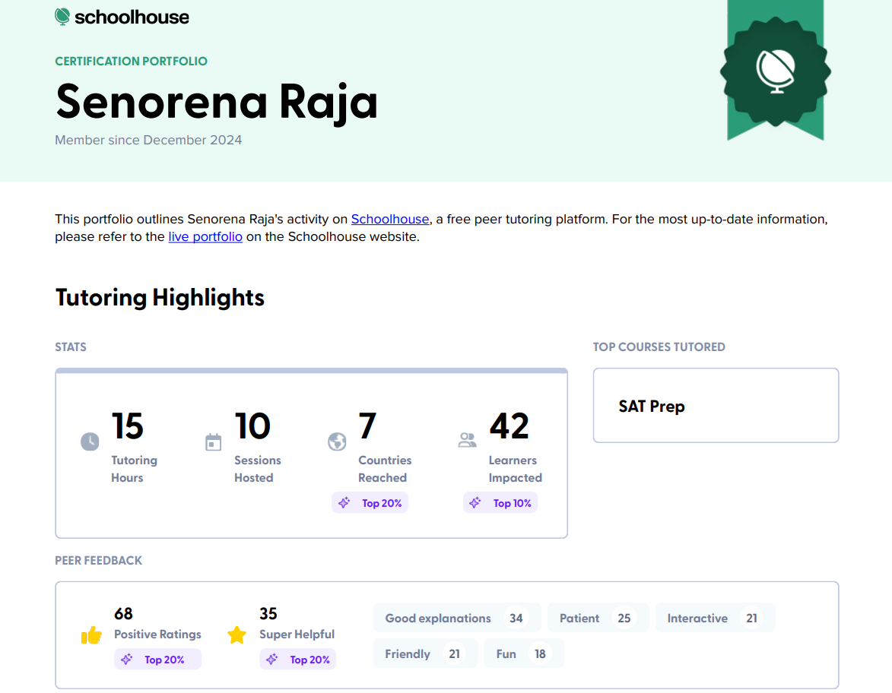
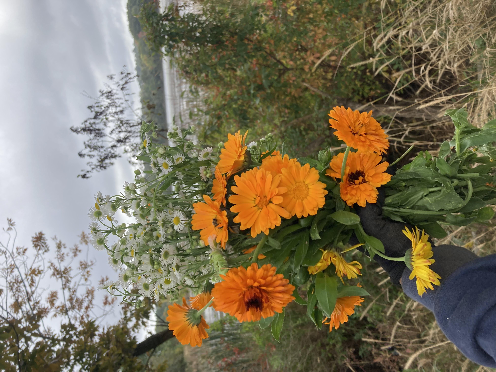

Volunteering
Schoolhouse.world - 2026-Present

I tutor high school students in SAT Math/English concepts and problem-solving strategies.
I also help students build accuracy, confidence, and test-taking skills.
Lexington Community Farm - 2022 & 2023

During summer vacations, I worked on removing weeds, cleaning greenhouses, and tarp management.
I also helped our community to maintain an environment for crops to thrive in.
Science Olympiad Mentoring - 2024 & 2025
I guided middle school students in the Experimental Design event. I also taught scientific reasoning and competition strategies to ensure they did their best during competitions.
Infinity Squad - 2024 & 2025
I provided one-on-one support in foundational math topics and
improved student’s conceptual understanding and performance in foundtational math topics.